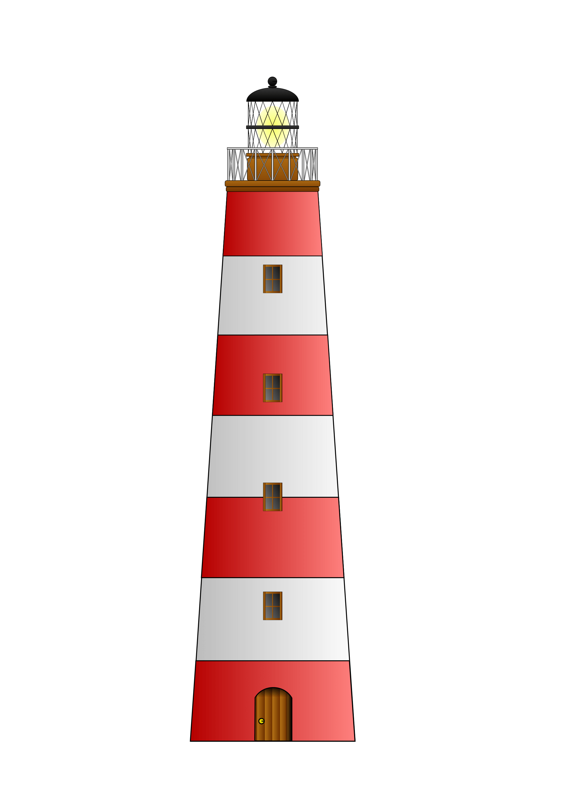

2o Στάδιο : Αναγνώριση προτύπων - Μοτίβα
Εφόσον κατά το στάδιο 1 αποσυνθέσαμε το πρόβλημα σε μικρότερα, ένα επόμενο σημαντικό μέρος της υπολογιστικής σκέψης είναι η εύρεση ή όχι προτύπων στο πρόβλημα.
αν κοιτάξουμε προσεκτικά θα δούμε ότι υπάρχουν μοτίβα σε σχεδόν σε όλα (φύση,τέχνη, επιστήμες). Ο ήλιος που ανατέλει και δύει καθημερινά είναι ένα μοτίβο.
Πάτησε με το mouse την παρακάτω εικόνα
